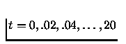

We present now some simple commands. At the carriage return all the commands typed since the last prompt are interpreted.
-->a=1;
-->A=2;
-->a+A
ans =
3.
-->//Two commands on the same line
-->c=[1 2];b=1.5
b =
1.5
-->//A command on several lines
-->u=1000000.000000*(a*sin(A))^2+...
--> 2000000.000000*a*b*sin(A)*cos(A)+...
--> 1000000.000000*(b*cos(A))^2
u =
81268.994
Give the values of 1 and 2 to the variables a and A . The semi-colon at the end of the command suppresses the display of the result. Note that Scilab is case-sensitive. Then two commands are processed and the second result is displayed because it is not followed by a semi-colon. The last command shows how to write a command on several lines by using ``...''. This sign is only needed in the on-line typing for avoiding the effect of the carriage return. The chain of characters which follow the // is not interpreted (it is a comment line).
-->a=1;b=1.5;
-->2*a+b^2
ans =
4.25
-->//We have now created variables and can list them by typing:
-->who
your variables are...
ans b a bugmes MSDOS home PWD
TMPDIR percentlib fraclablib soundlib xdesslib
utillib tdcslib siglib s2flib roblib optlib metalib
elemlib commlib polylib autolib armalib alglib mtlblib
SCI %F %T %z %s %nan %inf
old newstacksize $ %t %f %eps
%io %i %e %pi
using 3975 elements out of 1000000.
and 43 variables out of 1023
We get the list of previously defined variables a b c A together with the initial environment composed of the different libraries and some specific ``permanent'' variables.
Below is an example of an expression which mixes constants with existing variables. The result is retained in the standard default variable ans .
-->I=1:3
I =
! 1. 2. 3. !
-->W=rand(2,4);
-->W(1,I)
ans =
! 0.2113249 0.0002211 0.6653811 !
-->W(:,I)
ans =
! 0.2113249 0.0002211 0.6653811 !
! 0.7560439 0.3303271 0.6283918 !
-->W($,$-1)
ans =
0.6283918
Defining I, a vector of indices, W a random 2 x 4 matrix,
and extracting submatrices from W. The $ symbol stands
for the last row or last column index of a matrix or vector. The colon
symbol stands for ``all rows'' or ``all columns''.
-->sqrt([4 -4]) ans = ! 2. 2.i !
Calling a function (or primitive) with a vector argument. The response is a complex vector.
-->p=poly([1 2 3],'z','coeff')
p =
2
1 + 2z + 3z
-->//p is the polynomial in z with coefficients 1,2,3.
-->//p can also be defined by :
-->s=poly(0,'s');p=1+2*s+s^2
p =
2
1 + 2s + s
A more complicated command which creates a polynomial.
-->M=[p, p-1; p+1 ,2]
M =
! 2 2 !
! 1 + 2s + s 2s + s !
! !
! 2 !
! 2 + 2s + s 2 !
-->det(M)
ans =
2 3 4
2 - 4s - 4s - s
Definition of a polynomial matrix. The syntax for polynomial matrices is the same as for constant matrices. Calculation of the determinant of the polynomial matrix by the det function.
-->F=[1/s ,(s+1)/(1-s)
--> s/p , s^2 ]
F =
! 1 1 + s !
! - ----- !
! s 1 - s !
! !
! 2 !
! s s !
! --------- - !
! 2 !
! 1 + 2s + s 1 !
-->F('num')
ans =
! 1 1 + s !
! !
! 2 !
! s s !
-->F('den')
ans =
! s 1 - s !
! !
! 2 !
! 1 + 2s + s 1 !
-->F('num')(1,2)
ans =
1 + s
Definition of a matrix of rational polynomials. (The internal representation of F is a typed list of the form tlist('the type',num,den) where num and den are two matrix polynomials). Retrieving the numerator and denominator matrices of F by extraction operations in a typed list. Last command is the direct extraction of entry 1,2 of the numerator matrix F('num').
-->pause
-1->pt=return(s*p)
-->pt
pt =
2 3
s + 2s + s
Here we move into a new environment using the command pause and we obtain the new prompt -1-> which indicates the level of the new environment (level 1). All variables that are available in the first environment are also available in the new environment. Variables created in the new environment can be returned to the original environment by using return . Use of return without an argument destroys all the variables created in the new environment before returning to the old environment. The pause facility is very useful for debugging purposes.
-->F21=F(2,1);v=0:0.01:%pi;frequencies=exp(%i*v);
-->response=freq(F21('num'),F21('den'),frequencies);
-->plot2d(v',abs(response)',[-1],'011',' ',[0,0,3.5,0.7],[5,4,5,7]);
-->xtitle(' ','radians','magnitude');
Definition of a rational polynomial by extraction of an entry of the matrix F defined above. This is followed by the evaluation of the rational polynomial at the vector of complex frequency values defined by frequencies. The evaluation of the rational polynomial is done by the primitive freq. F12('num') is the numerator polynomial and F12('den') is the denominator polynomial of the rational polynomial F12. Note that the polynomial F12('num') can be also obtained by extraction from the matrix F using the syntax F('num')(1,2). The visualization of the resulting evaluation is made by using the basic plot command plot2d (see Figure 1.1).
-->w=(1-s)/(1+s);f=1/p
f =
1
---------
2
1 + 2s + s
-->horner(f,w)
ans =
2
1 + 2s + s
----------
4
The function horner performs a (possibly symbolic) change of variables for a polynomial (for example, here, to perform the bilinear transformation f(w(s))).
-->A=[-1,0;1,2];B=[1,2;2,3];C=[1,0];
-->Sl=syslin('c',A,B,C);
-->ss2tf(Sl)
ans =
! 1 2 !
! ----- ----- !
! 1 + s 1 + s !
Definition of a linear system in state-space representation. The function syslin defines here the continuous time ('c') system Sl with state-space matrices (A,B,C). The function ss2tf transforms Sl into transfer matrix representation.
-->s=poly(0,'s');
-->R=[1/s,s/(1+s),s^2]
R =
! 2 !
! 1 s s !
! - ----- - !
! s 1 + s 1 !
-->Sl=syslin('c',R);
-->tf2ss(Sl)
ans =
ans(1) (state-space system:)
!lss A B C D X0 dt !
ans(2) = A matrix =
! - 0.5 - 0.5 !
! - 0.5 - 0.5 !
ans(3) = B matrix =
! - 1. 1. 0. !
! 1. 1. 0. !
ans(4) = C matrix =
! - 1. 0. !
ans(5) = D matrix =
! 2 !
! 0 1 s !
ans(6) = X0 (initial state) =
! 0. !
! 0. !
ans(7) = Time domain =
c
Definition of the rational matrix R. Sl is the continuous-time linear system with (improper) transfer matrix R. tf2ss puts Sl in state-space representation with a polynomial D matrix. Note that linear systems are represented by specific typed lists (with 7 entries).
-->sl1=[Sl;2*Sl+eye()] sl1 = ! 2 ! ! 1 s s ! ! - ----- - ! ! s 1 + s 1 ! ! ! ! 2 ! ! 2 + s 2s 2s ! ! ----- ---- --- ! ! s 1 + s 1 ! -->size(sl1) ans = ! 2. 3. ! -->size(tf2ss(sl1)) ans = ! 2. 3. !
sl1 is the linear system in transfer matrix representation obtained by the parallel inter-connection of Sl and 2*Sl +eye(). The same syntax is valid with Sl in state-space representation.
-->deff('[Cl]=compen(Sl,Kr,Ko)',[ '[A,B,C,D]=abcd(Sl);';
--> 'A1=[A-B*Kr ,B*Kr; 0*A ,A-Ko*C]; Id=eye(A);';
--> 'B1=[B; 0*B];';
--> 'C1=[C ,0*C];Cl=syslin(''c'',A1,B1,C1)' ])
On-line definition of a function, called compen which calculates the state space representation (Cl) of a linear system (Sl) controlled by an observer with gain Ko and a controller with gain Kr. Note that matrices are constructed in block form using other matrices.
-->A=[1,1 ;0,1];B=[0;1];C=[1,0];Sl=syslin('c',A,B,C);
-->Cl=compen(Sl,ppol(A,B,[-1,-1]),...
--> ppol(A',C',[-1+%i,-1-%i])');
-->Aclosed=Cl('A'),spec(Aclosed)
Aclosed =
! 1. 1. 0. 0. !
! - 4. - 3. 4. 4. !
! 0. 0. - 3. 1. !
! 0. 0. - 5. 1. !
ans =
! - 1. !
! - 1. !
! - 1. + i !
! - 1. - i !
Call to the function compen defined above where the gains were calculated by a call to the primitive ppol which performs pole placement. The resulting Aclosed matrix is displayed and the placement of its poles is checked using the primitive spec which calculates the eigenvalues of a matrix. (The function compen is defined here on-line by deff as an example of function which receive a linear system (Sl) as input and returns a linear system (Cl) as output. In general Scilab functions are defined in files and loaded in Scilab by getf).
-->//Saving the environment in a file named : myfile
-->save('myfile')
-->//Request to the host system to perform a system command
-->unix_s('rm myfile')
-->//Request to the host system with output in this Scilab window
-->unix_w('date')
Thu Nov 12 15:54:58 MET 1998
Relation with the Unix environment.
-->foo=['void foo(a,b,c)';
--> 'double *a,*b,*c;'
--> '{ *c = *a + *b;}']
foo =
!void foo(a,b,c) !
! !
!double *a,*b,*c; !
! !
!{ *c = *a + *b;} !
-->write('foo.c',foo);
-->unix_s('make foo.o')
-->link('foo.o','foo','C');
-->deff('[c]=myplus(a,b)',...
--> 'c=fort(''foo'',a,1,''d'',b,2,''d'',''out'',[1,1],3,''d'')')
-->myplus(5,7)
ans =
12.
Definition of a column vector of character strings used for defining a C function file. The routine is compiled (needs a compiler), dynamically linked to Scilab by the link command, and interactively called by the function myplus.
-->deff('[ydot]=f(t,y)','ydot=[a-y(2)*y(2) -1;1 0]*y')
-->a=1;y0=[1;0];t0=0;instants=0:0.02:20;
-->y=ode(y0,t0,instants,f);
-->plot2d(y(1,:)',y(2,:)',[-1],'011',' ',[-3,-3,3,3],[10,2,10,2])
-->xtitle('Van der Pol')
Definition of a function which calculates a first order vector differential f(t,y). This is followed by the definition of the constant a used in the function. The primitive ode then integrates the differential equation defined by the Scilab function f(t,y) for y0=[1;0] at t=0 and where the solution is given at the time values

. (Function f can be defined as a C or Fortran program). The result is plotted in Figure 1.2 where the first element of the integrated vector is plotted against the second element of this vector.
-->m=['a' 'cos(b)';'sin(a)' 'c']
m =
!a cos(b) !
! !
!sin(a) c !
-->//m*m' --> error message : not implemented in scilab
-->deff('[x]=%c_m_c(a,b)',['[l,m]=size(a);[m,n]=size(b);x=[];';
--> 'for j=1:n,y=[];';
--> 'for i=1:l,t='' '';';
--> 'for k=1:m;';
--> 'if k>1 then t=t+''+(''+a(i,k)+'')*''+''(''+b(k,j)+'')'';';
--> 'else t=''('' + a(i,k) + '')*'' + ''('' + b(k,j) + '')'';';
--> 'end,end;';
--> 'y=[y;t],end;';
--> 'x=[x y],end,'])
-->m*m'
ans =
!(a)*(a)+(cos(b))*(cos(b)) (a)*(sin(a))+(cos(b))*(c) !
! !
!(sin(a))*(a)+(c)*(cos(b)) (sin(a))*(sin(a))+(c)*(c) !
Definition of a matrix containing character strings. By default, the
operation of symbolic multiplication of two matrices of character
strings is not defined in Scilab. However, the (on-line)
function definition for %cmc defines the multiplication of
matrices of character strings (note that the double quote is necessary
because the body of the deff contains quotes inside of quotes).
The % which begins the function definition for %cmc
allows the definition of an operation which did not previously
exist in Scilab, and the name cmc means ``chain multiply chain''.
This example is not very useful: it is simply given to show
how operations such as * can be defined on complex data
structures by mean of scpecific Scilab functions.
-->deff('[y]=calcul(x,method)','z=method(x),y=poly(z,''x'')')
-->deff('[z]=meth1(x)','z=x')
-->deff('[z]=meth2(x)','z=2*x')
-->calcul([1,2,3],meth1)
ans =
2 3
- 6 + 11x - 6x + x
-->calcul([1,2,3],meth2)
ans =
2 3
- 48 + 44x - 12x + x
A simple example which illustrates the passing of a function as an argument to another function. Scilab functions are objects which may be defined, loaded, or manipulated as other objects such as matrices or lists.
-->quit
Exit from Scilab.